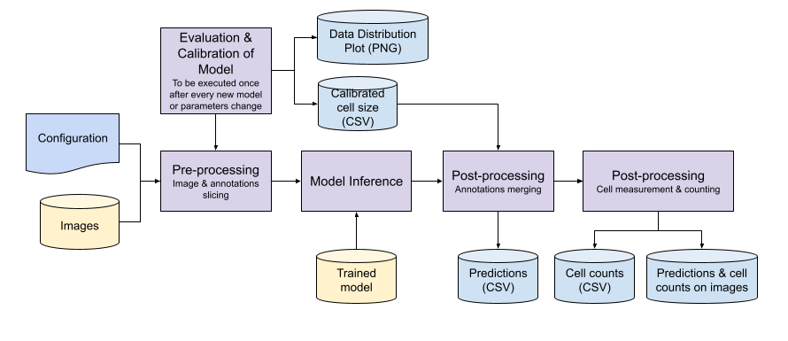
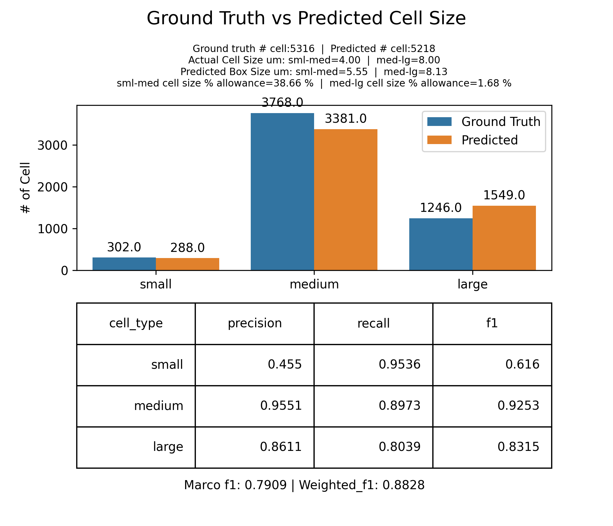
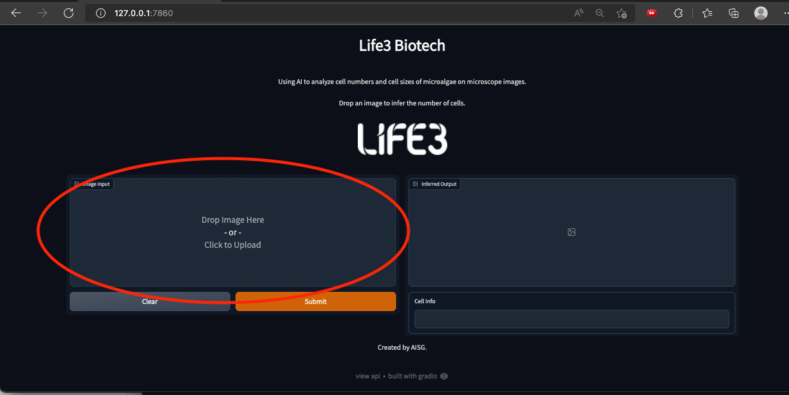
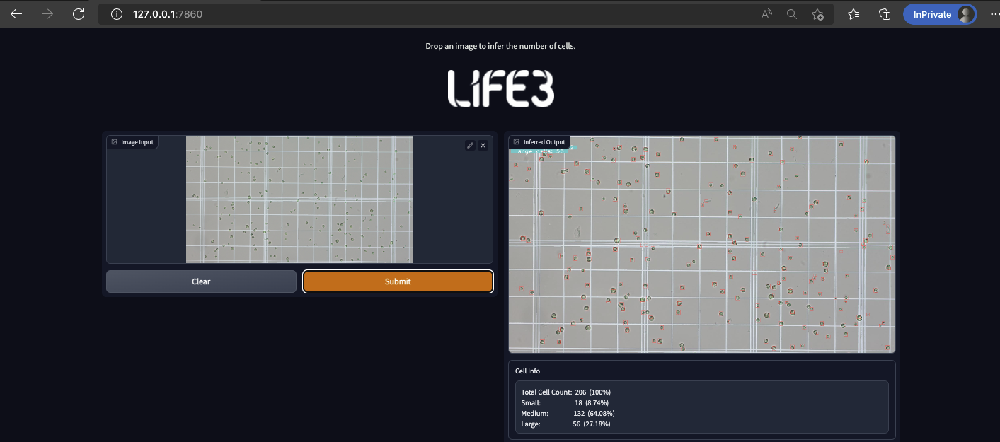

Please ensure that you have completed the "Environment Setup" guide before proceeding to follow this guide.
The diagram below shows the process flow of the inference module. There are 2 parts to inference.
The entrypoint of the evaluation and calibration module is the script src/eval_model.py by default.
The entrypoint of the inference module is the script src/batch_inferencing.py by default.

The main configuration file used to customise the AI engine is pipelines.yml, located in conf/life3 subfolder.
In pipelines.yml, the following parameters in the inference section are configurable.
|
Constant ( |
Parameter |
Type |
Description |
Default Value |
|---|---|---|---|---|
Defined Cell Size |
||||
|
UM_PIXEL_MAPPING |
um_pixel_mapping |
float |
Map one pixel of image to the corresponding micrometer for cell size. Unit: micrometer/pixel |
0.369763541667 |
|
SMALL_MID_CELL_CUTOFF |
small_mid_cell_cutoff |
float |
The upper bound of the small cell and lower bound of the mid-size cell in micrometer (μm) |
4.0 |
|
MID_LARGE_CELL_CUTOFF |
mid_large_cell_cutoff |
float |
The upper bound of the mid-size cell and lower bound of the large-size cell in micrometer (μm) |
8.0 |
Input/Output |
||||
|
INFERENCE_MODEL_PATH |
model_path |
str |
Absolute or relative path pointing to the model weight to be used. |
|
|
IMAGE_INPUT_DIR
|
image_input_dir
|
str
|
Absolute or relative path pointing to the input image directory for inference/prediction. File extensions = ".png"
|
|
|
CSV_OUTPUT_DIR
|
csv_output_dir
|
str
|
Absolute or relative path pointing to the output inferred/predicted annotated csv directory. File extensions = ".csv" Note: Consolidated cell count info for all images are saved as `predicted_results.csv` in the same folder |
|
|
SAVE_OUTPUT_IMAGE
|
save_output_image
|
boolean
|
Determines whether to save inferred/predicted image. |
True |
|
SAVE_OUTPUT_IMAGE_SHOWLABEL
|
save_output_image_showlabel
|
boolean
|
Determines whether to save inferred/predicted image with prediction text label on each detected cell. |
True |
|
SAVE_OUTPUT_IMAGE_SHOW_CELLCOUNT
|
save_output_image_show_cellcount
|
boolean
|
Determines whether to save inferred/predicted image with prediction cell count text label on top left corner of the image. |
True |
|
IMAGE_OUTPUT_DIR
|
image_output_dir
|
str
|
Absolute or relative path pointing to the output inferred/predicted image with cell bounding box drawn. |
|
Model parameter |
||||
|
INFERENCE_BACKBONE |
inference_backbone |
int |
Compound coefficient used to scale up EfficientNet, the backbone network. Possible values: 0, 1, 2, 3, 4, 5, 6. |
0 |
|
INFERENCE_CONFIDENCE_THRESH |
confidence_threshold |
float |
The confidence threshold is used to assess the probability of the object class appearing in the bounding box. |
0.33 |
|
INFERENCE_RUN_NMS |
run_nms |
boolean |
Determines whether the non-maximum Suppression is activated during inference. |
False |
|
INFERENCE_NMS_THRESH |
nms_threshold |
float |
Non max suppression is a technique used mainly in object detection that aims at selecting the best bounding box out of a set of overlapping boxes. |
0.2 |
Postprocessing parameter |
||||
|
SLICE_HEIGHT |
slice_height |
int |
The height of the image to be sliced (Suggestion: 256, 384, 512)
384 - Balance, good at detecting big and small object. 256, very good at small object but might miss big object. 512, very good at big object but might miss small object |
256 |
|
SLICE_WIDTH |
slice_width |
int |
The width of the image to be sliced (Suggestion: 256, 384, 512)
384 - Balance, good at detecting big and small object. 256, very good at small object but might miss big object. 512, very good at big object but might miss small object |
256 |
| OVERLAP_HEIGHT_RATIO | overlap_height_ratio | float | Fractional overlap in height of each window (e.g. an overlap of 0.2 for a window of size 512 yields an overlap of 102 pixels). | 0.15 |
| OVERLAP_WIDTH_RATIO | overlap_width_ratio | float | Fractional overlap in width of each window (e.g. an overlap of 0.2 for a window of size 512 yields an overlap of 102 pixels). | 0.15 |
| POSTPROCESS_TYPE | postprocess_type | str | Type of the postprocess to be used after sliced inference while merging/eliminating predictions. Options are 'NMM', 'GREEDYNMM' or 'NMS'. Default is 'GREEDYNMM'. | 'NMS' |
| POSTPROCESS_BBOX_SORT | postprocess_bbox_sort | str | If True, sort bounding box according to area (Prioritise tighter bounding box). False sort bounding box acccording to score. | True |
| POSTPROCESS_MATCH_METRIC | postprocess_match_metric | str |
Metric to be used during object prediction matching after sliced prediction. intersection over smaller area. Options are 'IOU' or 'IOS' |
"IOS" |
| POSTPROCESS_MATCH_THRESHOLD | postprocess_match_threshold | float | Sliced predictions having higher iou than postprocess_match_threshold will be postprocessed after sliced prediction. | 0.01 |
Before any inference or prediction on images can be performed, some parameters must be configured according to your environment settings. Open the file pipelines.yml and edit the following parameters to your current environment.
Note: Consolidated cell count info for all images are saved as predicted_results.csv in the same folder as csv_output_dir
model_path: "C:\\ai_engine\\models\\efficientdet_b0_20220510_201515.h5"
image_input_dir: "C:\\ai_engine\\data\\inference\\input\\"
csv_output_dir: "C:\\ai_engine\\data\\inference\\output\\"
save_output_image: True
image_output_dir: "C:\\ai_engine\\data\\inference\\output\\"
Note: Models trained on a single class (i.e. "cell") can only perform single class inference. If such a model is selected, another parameter in pipelines.yml must be amended. Under data_prep, comment out the line 'cell accumulation': 1 as shown below.
data_prep:
.
.
.
class_map: {
'cell': 0,
# 'cell accumulation': 1
}
(Only required to execute once until the next model change or parameters update)
Evaluation and calibration of the model is required every time a new model or new parameters are applied. You are required to execute this step once only until the next modification.
cd C:\ai_engine
conda activate life3-biotech
conda env update --file life3-biotech-conda-env.yml
python3 -m src.eval_model
or,
python -m src.eval_model
processed_data_path which you have set in the configuration file (pipelines.yml) and look for the folder eval_folder\distribution_output.If you have not changed the configuration, the default directory will be C:\ai_engine\data\processed\eval_folder\distribution_output
Three data distribution image files are generated for your reference.
Sample of calibrated cell size barplot.
Actual cell size and the calibrated Predicted box size are displayed on top. 
cd C:\ai_engine
conda activate life3-biotech
conda env update --file life3-biotech-conda-env.yml
python3 -m src.batch_inferencing
or,
python -m src.batch_inferencing
cd C:\ai_engine
conda activate life3-biotech-ui
conda env update --file life3-biotech-conda-env-ui.yml
python3 -m src.app
or,
python -m src.app
Running on local URL: http://127.0.0.1:7860/

Sample after inference 
python -m src.eval_model to recalibrate the cell size measurement.[2022-06-09 16:27:47,064][__main__][WARNING] - Config Parameters have changed, pipelines.yml differ from calibrated_params.csv. Affected parameters: postprocess_bbox_sort
[2022-06-09 16:27:47,064][__main__][WARNING] - Config Parameters have changed, please rerun eval_model to recalibrate cellsize.
python -m src.eval_model to calibrate the optimal cell size.[2022-06-10 10:53:46,049][__main__][ERROR] - !! No conf/calibrated_params.csv found, model not calibrated, run 'python -m src.eval_model' once to calibrate model !!
A guideline to follow, below parameters have direct impact to the inference results.
This 2 parameters will have the following behaviors.
384 - Balance, good at detecting big and small object.
256 - very good at small object but might miss big object.
512 - very good at big object but might miss small object.
Users are welcome to try out different values from the above, but in general, the bigger the slices, the better it can detect big object at the expense of smaller object, and the smaller the slices, the better it can detect small object at the expense of bigger object.
This parameter will control how accurate the inference will detect the object cell. If a higher value are used, less likely a false detection will occur, however for the current model (efficientdet_b0_20220607_111240.h5) that is shipped with the deployment package, it might not detect bigger cell. Current default recommeded value = 0.1 which will have some false detection but will be able to detect most of the cells.
Note: It is recommended to keep the default value for the rest of the parameters.